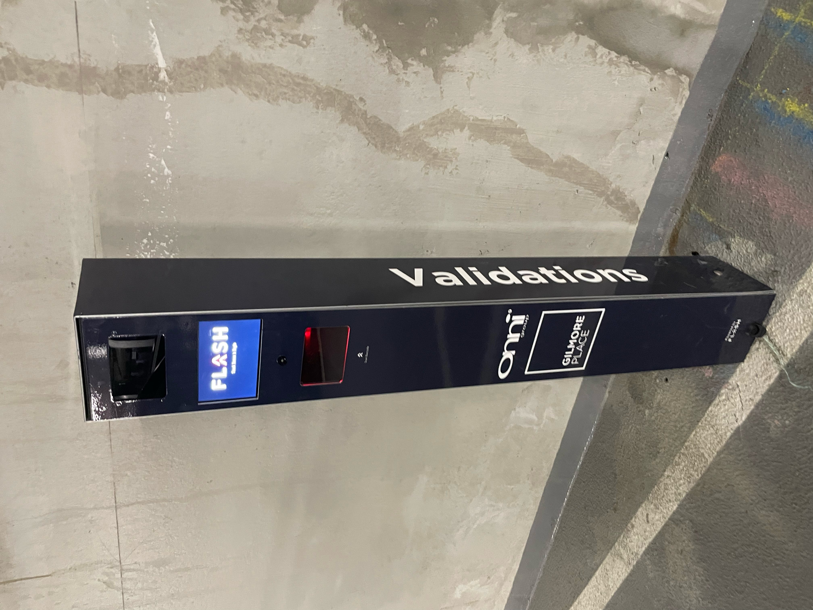

Instructions to Visitor Parking
-
From Gilmore station, go straight

-
Turn right at the first intersection.

-
Take the next available right turn. (Here)

- Continue straight.

- Enter through the “Parking” entrance.

- Take a ticket from the machine labeled “Flash.”

- When you see purple color stalls, keep turning right until you reach P3 (Visitor Parking).

- Continue turning right until you arrive here.

- At the screen, find "T1 4403" and I'll open the gate. Once inside, park in any available spot.

- Look for this gate that directs you to resident building, and stand under the red sensor to open the gate.

- Go straight to the door.

- Once here, text Min or Matina (Public Wi-Fi is available on P3, so try to get a Wi-Fi and DM)

- When leaving the building, find this validation machine, scan your ticket and you’ll have 20 mins to exit the building. Thanks for coming to the bday party! 🥳🫶
